Các bảng có thể được sử dụng để tổ chức bất cứ loại nội dung nào, cho dù là văn bản hay dữ liệu số. Bảng giúp tài liệu của
người dùng trông dễ nhìn và có tổ chức hơn
5.1 Tạo một bảng mới
Muốn tạo một bảng mới trong văn bản, người dùng đặt con trỏ chuột vào vị trí muốn chèn bảng.
Điều hướng tới tab Insert, sau đó, nhấp chọn Table. Click chọn nút tam giác nhỏ phía dưới, ở đây có một số lựa chọn:
- Nhấn giữ chuột kéo để chọn số dòng và số cột của bảng
- Insert Table… : Click chọn, một bảng thoại hiện ra cho người dùng xác định số dòng, số cột của bảng sẽ tạo ra.
- Draw Table: Công cụ vẽ bảng.
- Quick Table: Click nội dung này sẽ có một số mẫu bảng biểu đã được định dạng sẵn. Click chọn nếu mẫu phù hợp với yêu cầu.
- Convert Text to Table: Khi chọn đoạn văn bản, Click mục này, đoạn văn bản sẽ được đưa vào bảng.
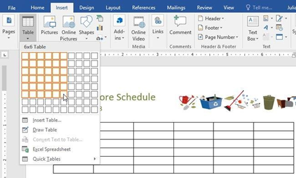
Hình 4.47. Tạo bảng
Trở lại giao diện Word, để nhập văn bản, hãy đặt điểm chèn vào bất cứ ô nào, sau đó bắt đầu nhập văn bản.
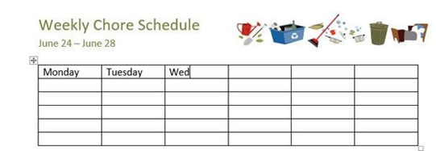
5.2 Các thao tác sửa đổi trong bảng
Ngay sau khi tạo bảng biểu, một công cụ định dạng Table Tool sẽ xuất hiện với 2 Tab là Design và Layout:
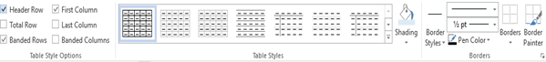
Hình 4.48. Tab Design của Table Tool trong MS Word 2019
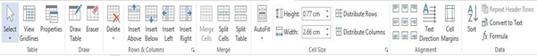
Hình 4.49. Tab Layout của Table Tool trong MS Word 2019
Ở trong nội dung này, Tab Design sẽ định dạng về đường viền, đổ màu,… cho bảng biểu. Tab LayOut sẽ định dạng về nội dung trong bảng biểu cũng như việc thêm, xóa, sửa các dòng, cột của bảng, trộn ô (Merge Cells), chia ô (Split Cells) …
- Chọn đối tượng muốn định dạng: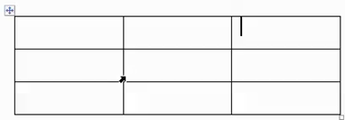
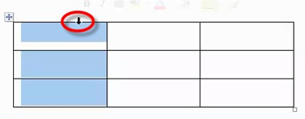
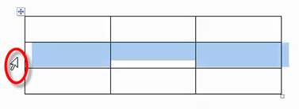
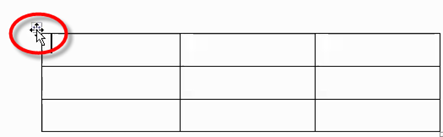
- Thao tác thêm, xóa hàng và cột
- Click chuột vào trong bảng, chọn tab Layout -> group Rows & Column:
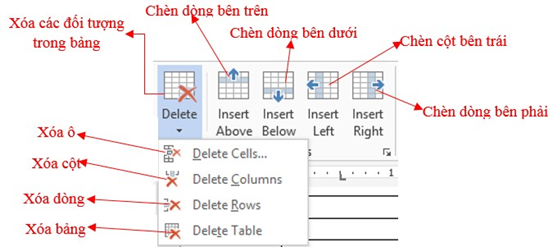
+ Insert Above: Thêm một hàng ở phía trên hàng chứ con trỏ.
+ Insert Below: Thêm một hàng ở phía dưới hàng chứ con trỏ.
+ Insert Left: Thêm cột bên trái cột chứ con trỏ.
+ Insert Right: Thêm cột bên phải cột chứ con trỏ.
5.2.1.1 Các thao tác xóa bảng, hàng, cột: chọn bảng, hàng, cột cần xóa.
+ Delete Cells: Xóa ô.
+ Delete Columns: Xóa cột.
+ Delete Rows: Xóa hàng.
+ Delete Table: Xóa bảng.
5.2.2.1 Chọn các ô cần trộn, chọn Tab Layout -> Group Merge có các chức năng sau:
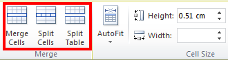
+ Merge Cell: Trộn các ô đang chọn thành một ô duy nhất.
+ Split Cells: Tách thành nhiều ô.
+ Split Table: Tách thành hai bảng khác nhau.
- Canh lề cho dữ liệu trong ô
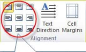
+ Text Direction: Thay đổi hướng của dữ liệu trong ô.
+ Cell Margins: Thiết lập khoảng cách giữa dữ liệu và lề ô.
5.2.1 Tạo kiểu bảngKiểu bảng cho phép người dùng thay đổi giao diện của bảng được tạo bao gồm một số thiết kế như màu sắc, đường viền và phông chữ.
- Nhấp vào vị trí bất kì trong bảng, sau đó nhấp chọn tab Design trên thanh ribbon.
- Tìm nhóm Table Styles, sau đó nhấp chọn mũi tên chỉ xuống More để xem danh sách kiểu bảng đầy đủ.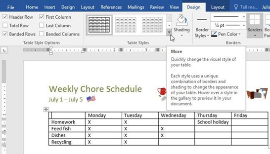
- Nhấp chọn kiểu bảng mà người dùng muốn.
- Ví dụ, kiểu bảng được chọn sẽ xuất hiện như hình dưới đây:
Khi đã chọn xong kiểu bảng, người dùng có thể bật hoặc tắt các tùy chọn khác nhau để thay đổi giao diện của nó. Có 6 tùy chọn: Header Row, Total Row, Banded Rows, First Column, Last Column, and Banded Columns.
- Nhấp vào vị trí bất kì trong bảng, sau đó điều hướng tới tab Design.
- Tìm mục Table Style Options, sau đó chọn hoặc bỏ chọn các ô người dùng muốn.
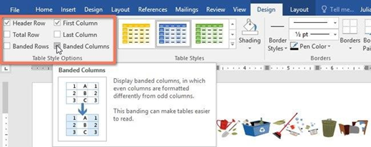
Kết quả sau khi chỉnh sửa.
5.2.3 Thêm các đường viền vào bảng
- Chọn các ô mà người dùng muốn áp dụng cùng một kiểu đường viền.
- Sử dụng các lệnh trong tab Design để chọn Line Style, Line Weight và Pen Color.
- Nhấp vào mũi tên thả xuống trong mục Borders.
- Chọn kiểu đường viền trong menu thả xuống
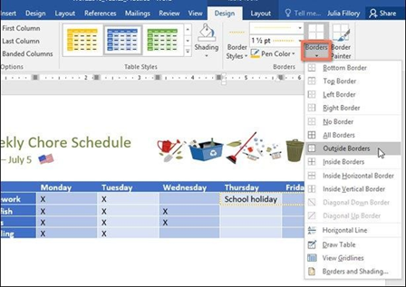
Kết quả sau khi thêm viền.
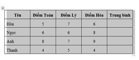
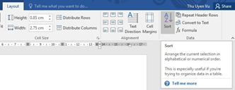
Hình 4.50. Sắp xếp dữ liệu trong bảng
Hộp thoại Sort xuất hiện,
người dùng lựa chọn các cột dữ liệu khóa để làm điều kiện sắp xếp.
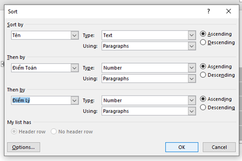
Hình4.51. Hộp thoại Sort
5.3.1 Kết quả sau khi lựa chọn các điều kiện sắp xếp ở trên":
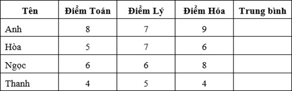